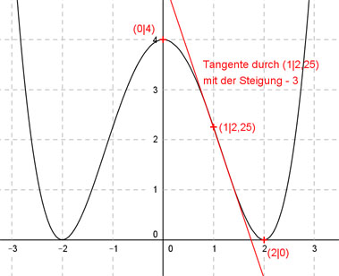

Aufgabe 104 Der Graph einer ganzrationalen Funktion 4. Grades schneidet die y-Achse bei 4, berührt die x-Achse bei x = 2 und hat im Punkt (1|2,25) die Steigung -3. Wie lautet seine Funktionsgleichung?  Allgemeine Form einer ganzrationalen Funktion 4. Grades: f(x) = ax4 + bx3 + cx2 + dx + e f’(x) = 4ax3 + 3bx2 + 2cx + d f’’(x) = 12ax2 + 6bx + 2c 5 Bedingungen: 1. Schneidet die y-Achse bei 4 bedeutet: f(0) = 4 --> a * 04 + b * 03 + c * 02 + d * 0 + e = 4 --> e = 4 2. Berührt die x-Achse bei x = 2 bedeutet zum einen: (e = 4 eingesetzt) f(2) = 0 --> a * 24 + b * 23 + c * 22 + d * 2 + 4 = 0 --> 16a + 8b + 4c + 2d + 4 = 0 I 3. Berührt die x-Achse bei x = 2 bedeutet zum anderen: f’(2) = 0 --> 4a * 23 + 3b * 22 + 2c * 2 + d = 0 --> 32a + 12b + 4c + d = 0 II 4. Hat im Punkt (1|2,25) die Steigung -3 bedeutet zum einen: (e = 4 eingesetzt) f(1) = 2,25 --> a * 14 + b * 13 + c * 12 + d * 1 + 4 = 2,25 --> a + b + c + d + 4 = 2,25 III 5. Hat im Punkt (1|2,25) die Steigung -3 bedeutet zum anderen: f’(1) = -3 --> 4a * 13 + 3b * 12 + 2c * 1 + d = -3 --> 4a + 3b + 2c + d = -3 IV I + II * (-2) 16a + 8b + 4c + 2d + 4 = 0 -64a - 24b - 8c - 2d = 0 ----------------------------- -48a - 16b - 4c + 4 = 0 |-4 -48a - 16b - 4c = -4 V I + IV * (-2) 16a + 8b + 4c + 2d + 4 = 0 -8a - 6b - 4c - 2d = 6 --------------------------- 8a + 2b + 4 = 6 |-4 8a + 2b = 2 VI III * (-1) * IV -a - b - c - d - 4 = -2,25 4a + 3b + 2c + d = -3 ----------------------------- 3a + 2b + c - 4 = -5,25 |+4 3a + 2b + c = -1,25 VII VII * 4 + V 12a + 8b + 4c = -5 -48a - 16b - 4c = -4 --------------------- -36a - 8b = -9 VIII VI * 4 + VIII 32a + 8b = 8 -36a - 8b = -9 --------------- -4a = -1 |:(-4) a = 1/4 = 0,25 a = 0,25 in VI eingesetzt: 8 * 0,25 + 2b = 2 2 + 2b = 2 |-2 2b = 0 |:2 b = 0 a = 0,25 und b = 0 in VII eingesetzt: 3 * 0,25 + 2 * 0 + c = -1,25 0,75 + c = -1,25 |-0,75 c = -2 a = 0,25 und b = 0 und c = -2 in IV eingesetzt: 4a + 3b + 2c + d = -3 4 * 0,25 + 3 * 0 + 2 * (-2) + d = -3 1 - 4 + d = -3 -3 + d = -3 | +3 d = 0 Gesuchte Funktionsgleichung: f(x) = 0,25x4 - 2x2 + 4